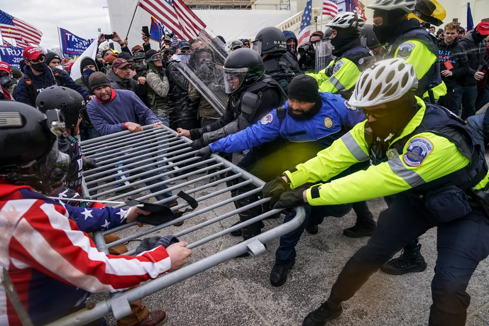

Incidents of mass violence are human-caused tragedies that can impact whole communities and the country at large. These types of disasters, which include shootings and acts of terrorism, often occur without warning and can happen anywhere.
These violent acts typically target defenseless citizens with the intent to harm or kill. They can instill feelings of confusion, fear, and helplessness in survivors. Incidents of mass violence disturb our collective sense of order and safety, and may even impact those with no personal connections to the event.
Because of the unpredictable nature of these types of disasters, it's normal for people to experience emotional distress. Feelings such as overwhelming anxiety, trouble sleeping, and other depression-like symptoms are common responses to incidents of mass violence. Other signs of emotional distress related to incidents of mass violence may include:
Feeling numb or like nothing matters
Feeling helpless or hopeless
Worrying a lot of the time; feeling guilty but not sure why
Feeling like you have to keep busy
Excessive smoking, drinking, or using drugs (including prescription medication)

The quota protests posed the most serious challenge to Bangladesh’s government since Prime Minister Sheikh Hasina won a fourth consecutive term in January elections that the main opposition groups boycotted. The ruling Awami League party and opposition Bangladesh Nationalist Party have often accused each other of fueling political chaos and violence, most recently ahead of the country’s national election, which was marred by a crackdown on several opposition figures.
Government officials — including those at the Bangladesh Secretariat, the top office containing most of the country’s ministers and bureaucrats — wore black badges Tuesday to mourn those killed as the country crawls back to normalcy with the strict curfew being relaxed in recent days. Authorities also asked all mosques, temples and other religious installations to organize special prayers Tuesday for the dead.
Home Minister Asaduzzaman Khan put the overall death toll at 150, while the country’s leading Bengali-language daily, Prothom Alo, said 211 people were killed since July 16. Thousands of others have been injured.
Media reports said about 10,000 people have been arrested over the past two weeks in relation to clashes at protests and other attacks on state properties. Rights groups have called for an end to arbitrary arrests, and critics accused the government of using excessive force to tamp down the fight.
.jpg)